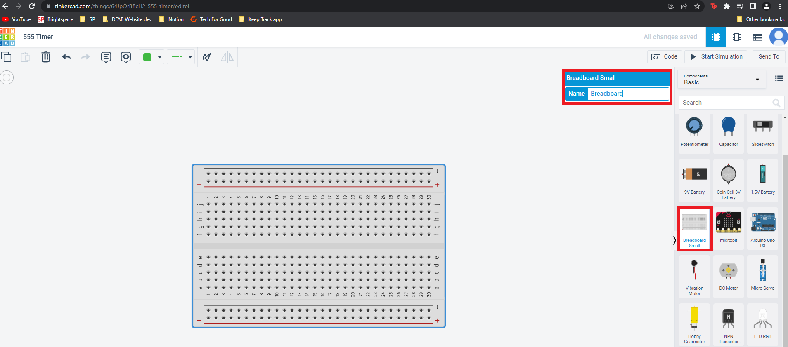

Electronics & Arduino
555 Timer
Also called free running or self-triggering mode does not have any stable state and it has 2 quasi stable state (HIGH and LOW).
How it Works?
It automatically interchanges between 2 states on a particular interval generating a rectangular waveform which makes the LED blink.
Time duration output of HIGH and LOW is determined by R and C values which makes the LEDs blink faster or slower.
Works as a oscillator circuit, in which output oscillate at a particular frequency and generate pulses in rectangular wave form.
You can also find out more indepth about 555 timer and how it works by using this link here.
And there is even a video about how it works!
But first, What is TinkerCAD?
It is an online 3D modeling program that runs in a web browser. The best part about it, it's completely free!! You can create 3D models, create circuits and write coding programs. You can even start learning using their tutorials to help you get started and its great for beginners and hobbyists!
Lets get Started!
First you need to create a TinkerCAD account, go ahead and sign up!

You will then be brought to the dashboard, click into circuit and create new design.

You now have a blank canvas to start designing the circuit. Click on the breadboard and move it into the canvas. You can name your breadboard if you want.
In the search bar search for 555 timer and place it into the breadboard.

If you hover over the breadboard you can see a red box showing where to connect the wires and how the wires will be connected by the light green line.

We want to put in the VCC and GND points first so get a black wire to represent GND and red to represent VCC. Click on the hole that you want to place and connect the GND black wire to the - symbol. do the same with the VCC red wire to the + symbol.
You will need a power supply to supply power to your circuit so search for the power supply and place it into your circuit. Connect the Positive and Negative connections from the power supply to the breadboard. DO NOT PLACE THE POSITIVE AND NEGATIVE WRONGLY YOU MIGHT BURN THE 555 TIMER CAUSING IT TO BE UNUSABLE.

Then get a oscilloscope and place it into your circuit to be able to see the waveform.

Prepare the other components you need for the circuit:
1 - Polarised Capacitor

1 - Ceramic Capacitor
1 - LED

1 - 1Kohm Resistor (Brown, Black, Red, Gold)
1 - 100Kohm Resistor (Brown, Black, Yellow, Gold)
1 - 220ohm Resistor (Red, Red, Brown, Gold)
Using the schematic diagram as reference connect the components with wires in the bread board.
Connect the oscilloscope Positive side to R3 and Negative side to the GND.

Then play the simulator to see if its working correctly and your done!
What is Arduino?
An Arduino is an open-source electronics platform used for making electronic projects like the projects that im going to be showing you later on. It is an easy-to-use hardware and software which the Arduino boards can read inputs that will be able to output something. I would say that it is a good starter kit if you want to get into electronics and abit of coding because arduino was one of the first microcontrollers that I was introduced to and you will be able to make really cool projects with it.
1 SIMPLE LED CONTROL
We were tasked to write a program to blink the LED in a variety of patterns
2 CONTROLLING 3 OR MORE LEDS
Using the same circuit but adding 3 or more LEDS (Red, Green, White) to Arduino Board using pin 6, 7 and 8. Write the program to produce running lights.
3 ADDING A SWITCH TO FLASHING LIGHTS
Adding a switch with a 10K pull-up resistor, When the switch is pressed, LEDs will light up and pressing again will turn off LEDS.
i used these videos for reference to understand about the pushbutton switch and incoperate it into the program.
4 CONTROL TYPE OF LIGHT-UP AND FLASHING LEDS
Using the switch, control the type of light-up and flashing LEDs by this order:
- Initially, LEDs are all in the OFF state
- Pressing the switch, turns on only the RED LED
- Pressing the switch, turns on only the GREEN LED
- Pressing the switch, turns on only the WHITE LED
- Pressing the switch, turns on all LEDs
- Pressing the switch, flashes the LEDs
- Pressing the switch, turns off all LEDs returning to the first state
5 PRESSING SWITCH FOR LONGER THAN 3 SECONDS
Pressing switch for more than 3 seconds will switch off all LEDs and return to the initial state